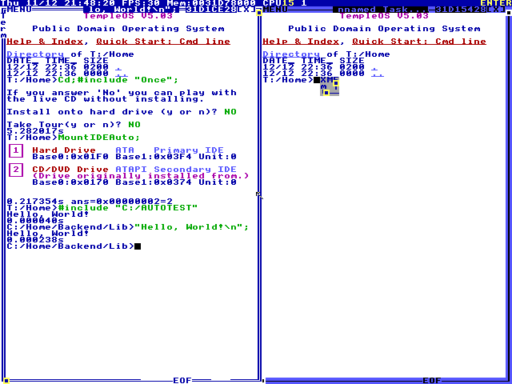
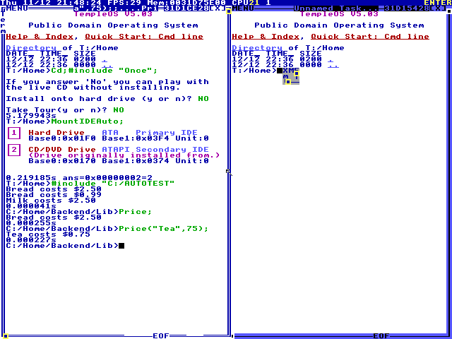

Control
HolyC
The second control: a C dialect that is also the shell of TempleOS, the operating system one man wrote alone.
By Terry A. Davis, 2003.
What it is
HolyC is the language of TempleOS, an operating system that Terry A. Davis (1969–2018) wrote alone, full-time, from 2003. He wrote all of it: the kernel, the compiler, the editor, the file system, the games, and the language they are written in.
HolyC is a dialect of C, and it is also the TempleOS shell. There is no separate command language: a line typed at the prompt is HolyC, compiled to machine code and run at once. A file is compiled the same way when it is included, just before it runs. There is no main(): code outside a function runs in order, top to bottom.
The system shaped the language. The TempleOS charter fixes the screen at 640 × 480 in 16 colours, leaves out networking, runs every program with full access to the machine, and limits the system to 100,000 lines of code for all time. Davis gave it away: “It is public domain, not GPL.”
Why it is here
Like Scratch, HolyC is a control. It was made to be used, every day, for everything a computer does in TempleOS. The charter’s measure for every decision is how fast the compiler compiles itself and the kernel, and it names the danger in the same sentence:
“The HolyC language should be changed to optimize this metric, as I did when I changed type casting from prefix standard C to postfix HolyC, but we need a rule to prevent degenerating into a brainfuck language.”
TempleOS Charter
What makes it unusual is not a joke or a puzzle but its scale: one person built a whole operating system around one language, and shaped the language to fit it.
| Question | Esoteric languages | HolyC |
|---|---|---|
| Who is it for? | Programmers, as a puzzle, a joke or an argument | Whoever programs TempleOS: “The priority is user developers” |
| Is hard meant to be hard? | Often yes (Malbolge, Brainfuck) | No: its changes to C remove typing, such as the parentheses on a call |
| Is the strange form the point? | Yes: images (Piet), invisibility (Whitespace) | No: its oddities come from the system it lives in |
The quirks used here
| Written | Meaning |
|---|---|
"Hello, World!\n"; | A string on its own is printed. With values after it, it is a format string, as in printf |
U0 U8 I64 | Types named by size: U0 is void, with zero size; U8 a byte; I64 a 64-bit integer. F64 is the only float |
I64 cents=250 | A default for an argument, which need not be at the end |
Price; | A function with no arguments, or only defaults, is called without parentheses |
Price(,99); | An argument left out takes its default, in any position |
$$$$ | One dollar sign, on screen. Why it takes four |
Not used here: there is no ?: operator and no continue; a type cast is written after the value; #exe {} runs code while the program compiles, and what it prints becomes part of the source; and the bytes and words inside an integer can be reached directly, as in i.u16[1].
Hello, World!
18 characters, one statement: a string on its own is printed, so the program is the string. It printed Hello, World!↵ in TempleOS, under QEMU, on 2026-11-12. This site cannot run HolyC, so its build does not run this program; it checks it against that run (how).
"Hello, World!\n";T:/Home>#include "C:/AUTOTEST" Hello, World! 0.000040s C:/Home/Backend/Lib>"Hello, World!\n"; Hello, World! 0.000238s C:/Home/Backend/Lib>

After the file ran, the same line was typed at the TempleOS prompt, and it printed the line again: the shell is the language. Under each command TempleOS prints how long it took.
How it runs
Three quirks in seven lines. Price has a default for both its arguments, so Price; calls it with neither and no parentheses, and Price(,99); leaves out only the first. In TempleOS it printed Bread costs $2.50↵Bread costs $0.99↵Milk costs $2.50↵.
U0 Price(U8 *what="Bread",I64 cents=250)
{
"%s costs $$$$%d.%02d\n",what,cents/100,cents%100;
}
Price;
Price(,99);
Price("Milk");T:/Home>#include "C:/AUTOTEST"
Bread costs $2.50
Bread costs $0.99
Milk costs $2.50
0.000041s
C:/Home/Backend/Lib>Price;
Bread costs $2.50
0.000255s
C:/Home/Backend/Lib>Price("Tea",75);
Tea costs $0.75
0.000227s
C:/Home/Backend/Lib>
The dollar sign takes four. TempleOS text is DolDoc, a document format in which $ starts a command, such as a colour or a link, and $$ is one plain dollar sign. A source file is DolDoc, so $$$$ in the file is $$ in the string; the terminal is DolDoc too, so $$ printed there shows as one $. The first try at this program had two: the terminal read the dollar left in each string as the start of a command, and printed only Bread costs 0.99↵Milk costs D↵. That run is kept too: the program and its log.
The record
HolyC runs only in TempleOS, so the evidence is a run there, kept in the repository in _src/design/templeos. On 2026-11-12 each program was put on a disk by gamec, a tool in a fork of TempleOS, which boots the TempleOS V5.03 live CD in QEMU, types the commands and copies the terminal to the serial port. Each run took under a minute from boot, in software emulation: 38 seconds for Hello World, 42 for the prices.
The build checks that record every time it runs: that each program file is the one TempleOS ran, byte for byte; that the serial log shows a clean run and the output these pages print; and that the screen, read back from the screenshot’s pixels, shows the same lines, and each typed command with what it printed. If a program here changes, the build stops until it has been run in TempleOS again.